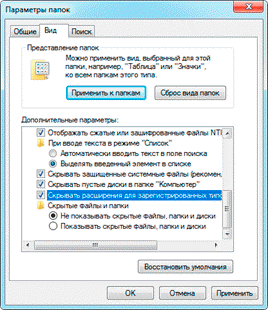

Расширение файла
Что такое формат и расширение
Формат или тип — это информация о файле, по которой система понимает, какого он вида и в какой программе его открыть. Для этого у каждого файла есть расширение.
Расширение — это несколько английских букв и/или цифр. Находятся они сразу после названия и разделяются точкой.
На картинке показан файл с расширением mp3. Про него компьютер знает, что это аудио и открывать его нужно в программе-проигрывателе. Значок, которым он отмечен – это иконка программы запуска.
Есть текстовые файлы - они открываются в программе для работы с текстом. Есть музыкальные и видео - они запускаются в проигрывателях. Есть графические (фото, картинки) – они открываются в программах для просмотра изображений. И еще много других типов. У каждого из них свой значок, точнее, значок приложения, в котором он будет открыт.
Если у файла вместо иконки белый лист, значит, компьютер не подобрал для него подходящую программу.

При его открытии появится окно с выбором приложения. Компьютер предлагает пользователю самостоятельно указать программу для запуска.
Как правило, такими значками отмечены файлы, которые нужны для корректной работы компьютера. Их много в системном локальном диске. Такие объекты нельзя удалять или переименовывать, иначе приложения, за которые они отвечают, могут работать со сбоями.
Как узнать расширение
Система компьютера может быть настроена таким образом, что расширения у всех файлов показаны.
Или наоборот: так, что показаны только имена, без форматов.
Эту настройку можно изменить.
В Windows 10 открыть любую папку, нажать на пункт «Вид» вверху и поставить или убрать птичку с пункта «Расширения имен файлов».
Или так: Вид → Параметры → вкладка «Вид» → пункт «Скрывать расширения для зарегистрированных типов файлов».
В Windows 7 чуть сложнее:
- Открыть любую папку.
- Нажать на «Упорядочить значки» вверху.
- Выбрать «Параметры папок и поиска».
- В появившемся окошке перейти на вкладку «Вид».
- Внизу списка поставить или убрать галочку с пункта «Скрывать расширения для зарегистрированных типов файлов».
Или так: Пуск → Панель управления → Оформление и персонализация → Параметры папок.
Если расширения нет
Если у объекта нет расширения, компьютер не может подобрать программу для его запуска. Это происходит, когда пользователь случайно или намеренно удаляет расширение из имени. А еще может быть из-за вируса.
Решить эту проблему легко, если знаешь тип объекта. Например, знаешь, что это фотография. Тогда нужно просто переименовать файл, добавить после названия точку и указать формат. Вот как это сделать:
- Настроить компьютер на показ расширений (см. выше).
- Правой кнопкой мыши по файлу – Переименовать.
- Сразу после названия напечатать точку и расширение.
- Нажать Enter.
Наиболее популярные форматы:
- Документы – doc, docx или pdf
- Таблицы – xls, xlsx
- Архивы – zip или rar
- Фотографии – jpg или png
- Музыка – mp3 или wav
- Видео – mp4 или avi
Другие типы можно посмотреть в конце урока в таблице.
Если формат неизвестен. Чтобы открыть файл, необязательно вручную прописывать расширение. Можно просто запустить его и в окошке выбрать подходящую программу. Если вы правильно ее укажите, объект откроется.
Или щелкните по нему правой кнопкой мыши, выберите «Открыть с помощью…». Или «Открыть с помощью» → «Выбрать другое приложение».
Узнать тип файла можно через сервис open-file.ru. Просто перетяните объект в окошко, и сайт определит формат.
Как изменить расширение
Изменить расширение можно через переименование:
- Настроить компьютер на показ расширений (см. выше).
- Щелкнуть правой кнопкой мыши по файлу – Переименовать.
- Стереть старое расширение после точки и напечатать новое.
- Нажать Enter.
Появится окошко, в котором система предупредит о последствиях. Ведь если вы неправильно укажите формат, файл может не открыться. Например, у вас документ с расширением doc, а вы меняете его на pdf.
После нажатия на кнопку «Да» новый тип будет назначен. А также добавится значок программы для его запуска. Но обычно после такой ручной смены расширения файл перестает открываться. Потому что он технически остался тем же, что и был.
Вернуть старое расширение можно таким же образом – через переименование. Или щелкнув правой кнопкой мыши по пустому месту и выбрав пункт «Отменить переименование».
Так как же правильно изменить расширение? Для этого нужно сделать конвертацию – преобразование в другой формат. Это делается через специальные программы или онлайн-сервисы.
Вбиваем в поисковик Яндекс или Google запрос «из … в …». Например, из word в pdf.
Как назначить программу запуска
Каждому типу файла система назначает приложение для его запуска. И помечает иконкой этой программы. Например, текстовые (txt) будут по умолчанию открыты в Блокноте. А музыкальные (mp3) – в проигрывателе Windows Media.
Когда вместо значка показан белый лист, значит, система не понимает, в какой программе открыть объект. И при его запуске предлагает самостоятельно выбрать приложение из тех, что установлены на компьютере.
Если поставить птичку на пункт «Всегда использовать это приложение», то в последующем все объекты данного типа будут запускаться в выбранной программе.
Но не всегда нужная программа установлена на компьютере. Бывает, ее просто нет - тогда файл открыть никак не получится. В этом случае нужно установить подходящее приложение.
Для каждого популярного формата есть своя бесплатная программа:
- PDF – Foxit Reader ( оф. сайт )
- ZIP и RAR – 7-Zip ( оф. сайт )
- DOC, DOCX, XLS, XLSX и другие документы MS Office – OpenOffice ( оф. сайт )
- MP3, MP4, MKV и другие аудио/видео – Media Player Classic ( оф. сайт )
Другие форматы и программы для них смотрите в таблице ниже.
На заметку. Также белый лист вместо значка приложения показывается на файлах, у которых нет расширения. Об этом я рассказывал выше в статье.
Выбор программы по умолчанию
А бывает, объекты определенного типа открываются в неподходящей программе. Тогда можно указать другое приложение для их запуска.
-
Щелкните правой кнопкой мыши по файлу. Выберите «Открыть с помощью…» или «Открыть с помощью» → «Выбрать другое приложение».
-
В окошке кликните левой кнопкой мыши по нужной программе и поставьте птичку на пункт «Всегда использовать это приложение». Нажмите ОК.
Вот и всё – теперь объекты данного формата будут по умолчанию запускаться в назначенной программе.
Таблица популярных форматов
Фотографии (Windows 8/10)
Средство просмотра фотографий (Windows 7)
FastStone Image Viewer
Paint
Microsoft Word
OpenOffice
LibreOffice
Microsoft Word
OpenOffice
LibreOffice
Acrobat Reader
Foxit Reader
Блокнот
Notepad++
WinZip
WinRAR
7-Zip
Windows Media Player
Media Player Classic
VLC Media Player
Windows Media Player
Media Player Classic
VLC Media Player
Google Chrome
Яндекс.Браузер
Mozilla Firefox
Opera
Microsoft PowerPoint
OpenOffice
Microsoft Access
UltraISO
Alcohol 120%
7-Zip
CorelDRAW
CDR Viewer
WinDjView
FBReader